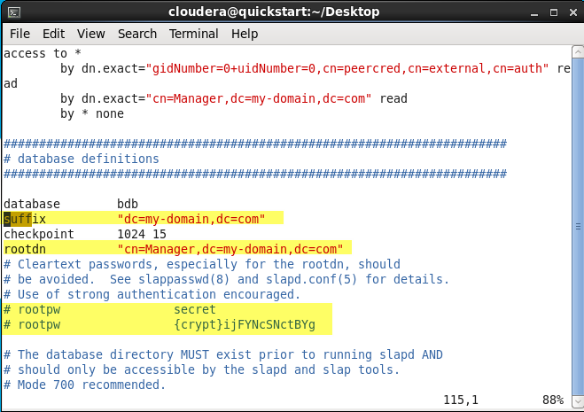
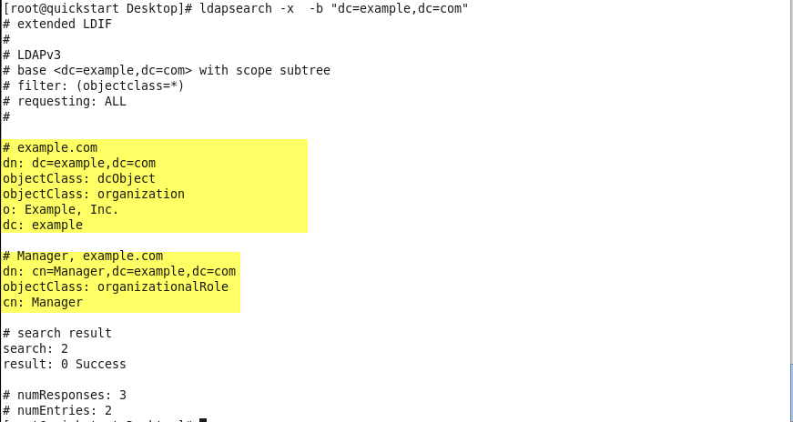

1 安装OpenLDAP
- 使用yum安装OpenLdap
sudo yum install -y openldap openldap-servers openldap-clients
- 复制文件
sudo cp /usr/share/openldap-servers/slapd.conf.obsolete /etc/openldap/slapd.conf sudo cp /usr/share/openldap-servers/DB_CONFIG.example /var/lib/ldap/DB_CONFIG sudo mv /etc/openldap/slapd.d{,.bak}
- 修改配置文件
sudo vim /etc/openldap/slapd.conf
- 修改前

- 修改后

suffix: 是根域
rootdn: 是管理员所在位置
rootpw: 是管理员密码，可以是明文（本示例为：secret），也可以是加密的（如 rootpw {SSHA}NXV9Fl28qCHMmA6P sjhVX0uejTKE6OYr）
- 分配目录权限
sudo chown ldap.ldap /etc/openldap/* sudo chown ldap.ldap /var/lib/ldap/*
- 启动sladp,启动后的389端口就是默认端口。
sudo service slapd start

- 新建文件example.ldif
dn:dc=example,dc=com objectclass:dcObject objectclass:organization o:Example, Inc. dc:example dn:cn=Manager,dc=example,dc=com objectclass:organizationalRole cn:Manager
- 导入example.ldif
ldapadd -x -W -D "cn=Manager,dc=example,dc=com" -f example.ldif
- 输入刚设置的 rootpw 的密码

- 查询已经导入的数据
ldapsearch -x -b "dc=example,dc=com"
